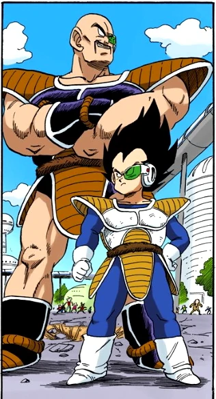

Drag n Ball Z
n Ball Z
| Table of contents |
|---|
| Saiyan Saga |
| Namek Saga |
| Links |
|---|
| Relative Link to 'example.html' |
| Absolute Link to Dragon Ball Z's wikipedia |
Saiyan Saga
Set a few years after the end of the original Dragon Ball story. Goku comes to visit his friends at Kame House and introduces his son, Gohan. The happiness of his reunion is short-lived however when an alien who calls himself Raditz arrives and reveals Goku's true origins. After Raditz kidnaps Gohan to use as a bargaining chip against him. Goku is forced to team up with his old adversay Piccolo to fight Raditz. They succeed but at a high cost and it turns out Raditz was just the precursor to a much bigger threat on the way.



Namek Saga
The battle against Nappa and Vegeta is won but at the cost of Yamcha, Tien Shinhan, Chiaotzu, and Piccolo's lives. Since Piccolo was linked to Kami and he was the creator of the Earth's Dragon Balls, their deaths mean the Dragon Balls are now useless. All seems lost until Popo reveals that Kami had came from a planet called Namek and they could have Dragon Balls of their own to use. Bulma fixes up a ship and Gohan, Krillin and she head off to the planet while Goku waits to heal so he can follow after them later. However when the trio arrive on the planet, they find it's under siege by a tyrannical overlord named Frieza who likewise is after the Dragon Balls. Complicating matters is that Vegeta, having recovered from his defeat on Earth, is also after the Dragon Balls.
It's divided into three sections:- Namek saga:
- The trip to Namek itself, Bulma, Gohan and Krillin arriving, and fighting some of Frieza's forces while playing cat and mouse with Vegeta over the Dragon Balls.
- Captain Ginyu:
- After Zarbon's defeat, Frieza summons the Ginyu Force, a mercenary group, to come fill in and retrieve the Dragon Balls.
- Freeza saga:
- Frieza personally gets involved and confronts the heroes.

- Namek saga: